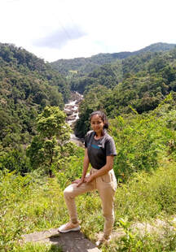
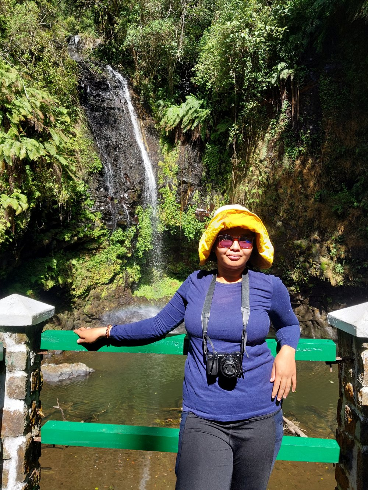
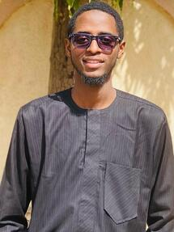

group leader
Thomas L.P. Couvreur (HDR, Directeur de Recherche 1)
Besides activities described on the homepage, I am active in taxonomical research in two wonderful plant families characteristic of tropical rain forests: Palms and Annonaceae. I undertake monographs and revisions of several little-known genera in both families. I also write floras for both families for different countries. I work in herbaria and undertake fieldwork for collecting plants in South America, Africa, and Southeast Asia. This last part is the basis of my research. Without taxonomy, the above research projects would be hampered. Finally, I use the internet and special tools available to disseminate and make this information available to everyone. I am also Chair of the Species Survival Commission - Palm Specialist Group of the IUCN.
post doctoral researchers
Dr. Tania Gonzalez Rivadeneira (Google Scholar)
Tania (based at the WasiLab of the PUCE, Ecuador) leads the participatory fieldwork with three Indigenous nationalities, conducting community workshops, co-designing sustainability indicators, and helping develop technical and policy solutions for peach palm cultivation and valorization. She is the post doctoral researcher within the peachPalm4LIFE project
PhD students

Erica Onjaniaina Ravomanana
Co-supervised with Dr. Mijoro Rakotoarinivo
University of Antananarivo, Madagascar, 2022–2025
Erica is working on redlisting the Annonaceae of Madagascar. We generated a verified taxonomic database of the family for Madagascar. She will use different R packages (e.g. ConR) and bibliography to assess these species. She will also undertake the taxonomic revision of the genus Uvaria in Madagascar. Her research is part of the ERC GLOBAL project.

Valérie Tolotra Ramarosandratana
Co-supervised with Dr. Mijoro Rakotoarinivo
University of Antananarivo, Madagascar, 2025–2028
Valérie works on the taxonomy and evolution of two endemic genera in Madagascar, Ambavia and Fenerivia. She undertakes taxonomic research focused on species delimitation and reconstructing the genera's evolution and biogeography. She will also undertake anatomical studies in both genera. Her research is part of the ERC GLOBAL project.

Ishaq Muawiyya
Co-supervised with Dr. Abubakar Bello
Umaru Musa Yar'Adua University, Nigeria, 2023–2024
Ishaq works on the diversity and conservation of Annonaceae in Nigeria. He will compile a checklist and distribution database, and undertake IUCN redlisting of the species. His research is part of the ERC GLOBAL project.
Master students
Engineers, international volunteers, other contracts
Past members
Archimède Patipe
Was the bioinformatician of the ERC GLOBAL project.
Dr. Laura Holzmeyer
(Google Scholar)
Was the postdoctoral researcher of the ERC GLOBAL project (2023-2025).
Now Postdoctoral Researcher, University of Göttingen, Germany.
Nge FJ, Johnson DM, Murray NA, Holzmeyer L, Floyd K, Stull G, Soule VRC, Sepulchre P, Tardif D, Rodrigues-Vaz C, Couvreur TLP (2026). Synchronous Miocene radiations and geographic-dependent diversification of pantropical Xylopia (Annonaceae). Molecular Phylogenetics and Evolution 215: 108485.
Dr. Serafin Streiff
PhD, University of Montpellier, 2012–2025.
Streiff SJR, Ravomanana EO, Rakotoarinivo M, Pignal M, Perez Pimparé E, Erkens RHJ, Couvreur TLP (2024). High-quality herbarium-label transcription by citizen scientists improves taxonomic and spatial representation of the tropical plant family Annonaceae. Adansonia 46: 173–185.
Streiff SJR, Erkens RHJ, Couvreur TLP (2025). The Evolutionary Legacy of Al Gentry: Uniting Patterns and Processes of Neotropical Rainforest Evolution. Annals of the Missouri Botanical Garden 110: 200–216.
Dr. Carlos Rodrigues-Vaz
Botanical engineer (based in Paris, MNHN), 2020–2023.
Dr. Suzanne Kamga Mogue
PhD, University of Youndé I, 2012–2025.
Co-supervised by Prof. Bonaventure Sonké.
Mogue Kamga, S., Brokamp, G., Cosiaux, A., Awono, A., Fürniss, S., Barfod, A.S., Muafor, F.J., Le Gall, P., Sonké, B., Couvreur, T.L.P. (2020). Use and Cultural Significance of Raphia Palms. Economic Botany.
Mogue Kamga, S., Sonké, B., Couvreur, T.L.P. (2019). Raphia vinifera (Arecaceae; Calamoideae): Misidentified for far too long. Biodiversity Data Journal 7: e37757.
Alix Lozinguez
VI IRD Quito, 2021–2023.
Dr. Francis Nge
(Google Scholar)
Was the postdoctoral researcher of the ERC GLOBAL project (2021-2023).
Now Researcher at the Sydney Botanic Gardens, Australia.
Lily Bennett
Master, Université de Montpellier, France, 2023.
Nicolas Zapata
Botanist (based in Quito, Ecuador).
Andrea Fernandez
Botanist (based in Quito, Ecuador).
Laureline Petit-Bagnard
Co-supervised by Dr. Germinal Rouhan.
Master, University of Montpellier, Montpellier / Paris, 2022.
Vincent Soulé
Research engineer, IRD, 2021–2023.
Dr. Mariano Kpatenon Joly
Co-directed with Adeoti Adeola Zouri-Kifouli, Université d'Abomey-Calavi, Bénin, and Estelle Jaligot (CIRAD, Montpellier).
Université d'Abomey-Calavi & Université de Montpellier, 2018–2021.
Kpatènon, M.J., Salako, K.V., Santoni, S., Zekraoui, L., Latreille, M., Tollon-Cordet, C., Mariac, C., Jaligot, E., Beulé, T., Adéoti, K. (2020). Transferability, Development of Simple Sequence Repeat (SSR) Markers and Application to the Analysis of Genetic Diversity and Population Structure of the African Fan Palm (Borassus aethiopum Mart.) in Benin. BMC Genetics 21: 145.
Dr. Léo Paul Dagallier
(Google Scholar)
PhD, University of Montpellier, 2018–2021.
Dagallier, L.-P.M.J., Janssens, S.B., Dauby, G., Blach-Overgaard, A., Mackinder, B.A., Droissart, V., Svenning, J.-C., Sosef, M.S.M., Stévart, T., Harris, D.J., Sonké, B., Wieringa, J.J., Hardy, O.J., Couvreur, T.L.P. (2020). Cradles and museums of generic plant diversity across tropical Africa. New Phytologist 225: 2196–2213.
Dagallier, L.-P.M.J., Mbago, F.M., Luke, W.R.Q., Couvreur, T.L.P. (2021). Three New Species of Uvariodendron (Annonaceae) from Coastal East Africa in Kenya and Tanzania. PhytoKeys 174: 107–126.
Dr. Sebastián Pablo Escobar Vasquez
(Google Scholar)
PhD, co-supervised by Henrik Balslev and Rommel Montufar.
Aarhus University, 2017–2020.
Escobar, S., Pintaud, J.-C., Balslev, H., Bernal, R., Ramírez, M.M., Millán, B., Montúfar, R. (2018). Genetic structuring in a Neotropical palm analyzed through an Andean orogenesis-scenario. Ecology and Evolution.
Escobar, S., Helmstetter, A.J., Jarvie, S., Montúfar, R., Balslev, H., Couvreur, T.L.P. (2021). Pleistocene Climatic Fluctuations Promoted Alternative Evolutionary Histories in Phytelephas aequatorialis, an Endemic Palm from Western Ecuador. Journal of Biogeography.
Dr. Andrew Helmstetter
(Google Scholar)
Postdoc on the AFRODYN project; PhD student 2014–2017.
Helmstetter, A.J., Béthune, K., Kamdem, N.G., Sonké, B., Couvreur, T.L.P. (2020). Individualistic Evolutionary Responses of Central African Rain Forest Plants to Pleistocene Climatic Fluctuations. PNAS.
Helmstetter, A.J., Amoussou, B.E.N., Bethune, K., Kamdem, N.G., Kakaï, R.G., Sonké, B., Couvreur, T.L.P. (2020). Phylogenomic Approaches Reveal How Climate Shapes Patterns of Genetic Diversity in an African Rain Forest Tree Species. Molecular Ecology 29: 3560–3573.
Dr. Jean Paul Ghogue
PhD, co-supervised with Prof. Sonké.
Université de Yaoundé I, Cameroon, 2012–2018.
Ghogue J.P., Sonké, B., Couvreur, T.L.P. (2017). Revision of the African genera Brieya and Piptostigma. Plant Ecology and Evolution 217: 173–216.
Dr. Brandet Junior Lissambou
PhD, co-supervised by Christiane Ateké, Olivier Hardy and Bonaventure Sonké.
Université des Sciences et Techniques de Masuku, Gabon, 2014–2018.
Lissambou B-J, Hardy OJ, Atteke C, Stévart T, Dauby G, Mbatchi B, Sonke B, Couvreur TLP (2018). Taxonomic revision of the African genus Greenwayodendron (Annonaceae). PhytoKeys 114: 55–93.
Lissambou B-J, Couvreur TLP, Atteke C, Stévart T, Piñeiro R, Dauby G, Monthe FK, Ikabanga DU, Sonké B, M'batchi B, Hardy OJ (2019). Species delimitation in the genus Greenwayodendron based on morphological and genetic markers reveals new species. TAXON 68: 442–454.
Dr. Marie Claire Veranso
(Google Scholar)
PhD student, 2014–2017.
University of Buea, Cameroon & University of Mainz, Germany.
Co-supervised with Dr. Gudrun Kadereit, Douglas Stone and Dr. Fongod.
Veranso–Libalah, M.-C., Douglas, R.S., Fongod, A.G.N., Couvreur, T.L.P., Kadereit, G. (2017). Phylogeny and systematics of African Melastomateae (Melastomataceae). Taxon 6: 584–614.
Alix Pugeaut
Master II student, 2017.
Muséum National d'Histoire Naturelle, Paris.
Dr. Amira Azizan
Master I student, 2016.
Université de Montpellier 2, AgroParisTech.
Dr. Gilles Dauby
Postdoctoral fellow, RAINBIO project, 2014–2016.
Dauby G, et al. (2016). RAINBIO: a mega-database of tropical African vascular plants distributions. PhytoKeys 74: 1–18.
Sosef M.S.M.*, Dauby G.*, et al. (2017). Exploring the floristic diversity of tropical Africa. BMC Biology 15: 1–15.
Dr. Adama Faye
(Google Scholar)
Master II then PhD student, 2011–2015.
Université de Montpellier, IRD grant.
Faye, A., Pintaud, J.-C., Baker, W.J., Vigouroux, Y., Sonké, B., Couvreur, T.L.P. (2016). Phylogenetics and diversification history of African rattans (Calamoideae, Ancistrophyllinae). Botanical Journal of the Linnean Society 182: 256–271.
Faye, A., Pintaud, J.-C., Baker, W.J., Sonké, B., Couvreur, T.L.P. (2014). A plastid phylogeny of the African rattans (Ancistrophyllinae, Arecaceae). Systematic Botany 39: 1099–1107.
Faye, A., Deblauwe, V., Mariac, C., Richard, D., Sonké, B., Vigouroux, Y., Couvreur, T.L.P. (2016). Phylogeography of the genus Podococcus (Palmae/Arecaceae) in Central African rain forests: climate stability predicts unique genetic diversity. Molecular Phylogenetics and Evolution 105: 126–138.
Scarcelli, N., Mariac, C., Couvreur, T.L.P., Faye, A., Richard, D., Sabot, F., Berthouly‐Salazar, C., Vigouroux, Y. (2016). Intra‐individual polymorphism in chloroplasts from NGS data: where does it come from and how to handle it? Molecular Ecology Resources 16: 434–445.
Dr. Vincent Deblauwe
(Google Scholar)
Postdoctoral fellow, 2014–2015.
IRD, Université de Yaoundé I.
Deblauwe, V., Droissart, V., Bose, R., Sonké, B., Blach-Overgaard, A., Svenning, J.C., Wieringa, J.J., Ramesh, B.R., Stévart, T., Couvreur, T.L.P. (2016). Remotely sensed temperature and precipitation data improve species distribution modelling in the tropics. Global Ecology and Biogeography 25: 443–454.